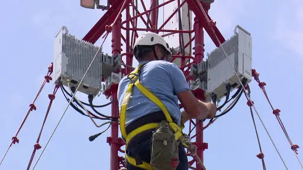

What is Telecommunication Engineering?
Base Stations and Satellite Communication


Modern telecommunication relies on infrastructure like radio base stations and satellites to connect people across the world instantly. These systems form the backbone of wireless communication.